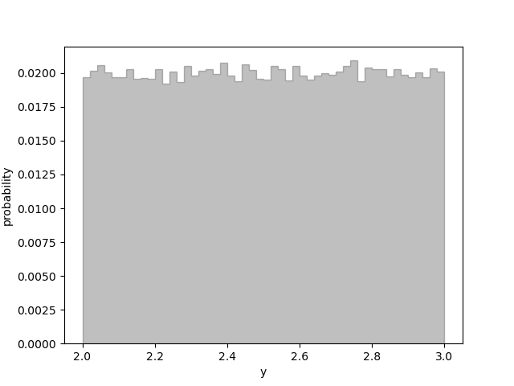

Overview and Tutorial¶
Introduction¶
This module provides tools for representing, manipulating, and simulating Gaussian random variables numerically. It can deal with individual variables or arbitrarily large sets of variables, correlated or uncorrelated. It also supports complicated (Python) functions of Gaussian variables, automatically propagating uncertainties and correlations through the functions.
A Gaussian variable x represents a Gaussian probability distribution, and
is therefore completely characterized by its mean x.mean and standard
deviation x.sdev. They are used to represent quantities whose values are
uncertain: for example, the mass, 125.7±0.4 GeV, of the recently
discovered Higgs boson from particle physics. The following code illustrates a
(very) simple application of gvar; it calculates the Higgs boson’s
energy when it carries momentum 50±0.15 GeV.
>>> import gvar as gv
>>> m = gv.gvar(125.7, 0.4) # Higgs boson mass
>>> p = gv.gvar(50, 0.15) # Higgs boson momentum
>>> E = (p ** 2 + m ** 2) ** 0.5 # Higgs boson energy
>>> print(m, E)
125.70(40) 135.28(38)
>>> print(E.mean, '±', E.sdev)
135.279303665 ± 0.375787639425
Here method gvar.gvar() creates objects m and p of type gvar.GVar
that represent Gaussian random variables for the Higgs mass and momentum,
respectively. The energy E
computed from the mass and momentum must, like them, be uncertain and so is
also an object of type gvar.GVar — with mean
E.mean=135.28 and standard deviation E.sdev=0.38. (Note
that gvar uses the compact notation 135.28(38) to represent a Gaussian
variable, where the number in parentheses is the uncertainty in the
corresponding rightmost digits of the quoted mean value.)
A highly nontrivial feature of gvar.GVars is that they automatically track
statistical correlations between different Gaussian variables. In the
Higgs boson code above, for example, the uncertainty in the energy
is due mostly to the initial uncertainty in the boson’s mass. Consequently
statistical fluctuations in the energy are strongly correlated with those
in the mass, and largely cancel, for example, in the ratio:
>>> print(E / m)
1.07621(64)
The ratio is 4–5 times more accurate than the either the mass or energy separately.
The correlation between m and E is obvious from their covariance and
correlation matrices, both of which have large
off-diagonal elements:
>>> print(gv.evalcov([m, E])) # covariance matrix
[[ 0.16 0.14867019]
[ 0.14867019 0.14121635]]
>>> print(gv.evalcorr([m, E])) # correlation matrix
[[ 1. 0.98905722]
[ 0.98905722 1. ]]
The correlation matrix shows that there is a 98.9% statistical correlation between the mass and energy.
A extreme example of correlation arises if we reconstruct the Higgs boson’s mass from its energy and momentum:
>>> print((E ** 2 - p ** 2) / m ** 2)
1 ± 1.4e-18
The numerator and denominator are completely correlated, indeed identical to
machine precision, as they should be. This works only because gvar.GVar object
E knows that its uncertainty comes from the uncertainties associated
with variables m and p.
We can verify that the uncertainty in the Higgs boson’s energy comes mostly from its mass by creating an error budget for the Higgs energy (and for its energy to mass ratio):
>>> inputs = {'m':m, 'p':p} # sources of uncertainty
>>> outputs = {'E':E, 'E/m':E/m} # derived quantities
>>> print(gv.fmt_errorbudget(outputs=outputs, inputs=inputs))
Partial % Errors:
E E/m
------------------------------
p: 0.04 0.04
m: 0.27 0.04
------------------------------
total: 0.28 0.06
For each output (E and E/m), the error budget lists the contribution
to the total uncertainty coming from each of the inputs (m and p).
The total uncertainty in the energy is ±0.28%, and almost all of that
comes from the mass — only ±0.04% comes from the uncertainty in the
momentum. The two sources of uncertainty contribute equally, however, to the
ratio E/m, which has a total uncertainty of only 0.06%.
This example is relatively simple. Module gvar, however, can easily
handle thousands of Gaussian random variables and all of their correlations.
These can be combined in arbitrary arithmetic expressions and/or fed through
complicated (pure) Python functions, while the gvar.GVars automatically
track uncertainties and correlations for and between all of these variables.
The code for tracking correlations is the most complex part of
the module’s design, particularly since this is done automatically, behind the
scenes.
What follows is a tutorial showing how to create gvar.GVars and
manipulate them to solve common problems in error propagation.
Another way to learn about gvar is to look at the
case studies later in the documentation. Each focuses on a single problem,
and includes the full code and data, to allow for further experimentation.
gvar was originally written for use by the lsqfit module,
which does multidimensional (Bayesian) least-squares fitting. It used to
be distributed as part of lsqfit, but is now distributed separately
because it is used by other modules
(e.g., vegas for multidimensional
Monte Carlo integration).
About Printing: The examples in this tutorial use the print function
as it is used in Python 3. Drop the outermost parenthesis in each print
statement if using Python 2; or add
from __future__ import print_function
at the start of your file.
Gaussian Random Variables¶
The Higgs boson mass (125.7±0.4 GeV) from the previous section is
an example of a Gaussian random variable. As discussed above, such variables
x represent Gaussian probability distributions, and therefore are
completely characterized by their mean x.mean
and standard deviation x.sdev.
A mathematical function f(x) of a Gaussian variable is defined
as the probability distribution of function values obtained by evaluating the
function for random numbers drawn from the original distribution. The
distribution of function values is itself approximately Gaussian provided the
standard deviation x.sdev of the Gaussian variable is sufficiently small
(and the function is sufficiently smooth).
Thus we can define a function f of a Gaussian variable x to be a
Gaussian variable itself, with
f(x).mean = f(x.mean)
f(x).sdev = x.sdev |f'(x.mean)|,
which follows from linearizing the x dependence of f(x) about point
x.mean. This formula, together with its multidimensional generalization,
lead to a full calculus for Gaussian random variables that assigns Gaussian-
variable values to arbitrary arithmetic expressions and functions involving
Gaussian variables. This calculus, which is built into gvar, provides
the rules for standard error propagation — an important application
of Gaussian random variables and of the gvar module.
A multidimensional collection x[i] of Gaussian variables is characterized
by the means x[i].mean for each variable, together with a covariance
matrix cov[i, j]. Diagonal elements of cov specify the standard
deviations of different variables: x[i].sdev = cov[i, i]**0.5. Nonzero
off-diagonal elements imply correlations (or anti-correlations) between
different variables:
cov[i, j] = <x[i]*x[j]> - <x[i]> * <x[j]>
where <y> denotes the expectation value or mean for a random variable
y.
Creating Gaussian Variables¶
Objects of type gvar.GVar are of two types: 1) primary gvar.GVars
that are created from means and covariances using
gvar.gvar(); and 2) derived gvar.GVars that result
from arithmetic expressions or functions involving gvar.GVars.
The primary gvar.GVars are the primordial sources of all uncertainties
in a gvar code. A single (primary) gvar.GVar is
created from its mean xmean and standard deviation
xsdev using:
x = gvar.gvar(xmean, xsdev).
This function can also be used to convert strings like "-72.374(22)"
or "511.2 ± 0.3" into gvar.GVars: for example,
>>> import gvar
>>> x = gvar.gvar(3.1415, 0.0002)
>>> print(x)
3.14150(20)
>>> x = gvar.gvar("3.1415(2)")
>>> print(x)
3.14150(20)
>>> x = gvar.gvar("3.1415 ± 0.0002")
>>> print(x)
3.14150(20)
Note that x = gvar.gvar(x) is useful when you are unsure
whether x is initially a gvar.GVar or a string representing a gvar.GVar. Note
also that '±' in the above example
could be replaced by '+/-' or '+-'.
gvar.GVars are usually more interesting when used to describe multidimensional
distributions, especially if there are correlations between different
variables. Such distributions are represented by collections of gvar.GVars in
one of two standard formats: 1) numpy arrays of gvar.GVars (any
shape); or, more flexibly, 2) Python dictionaries whose values are gvar.GVars or
arrays of gvar.GVars. Most functions in gvar that handle multiple
gvar.GVars work with either format, and if they return multidimensional results
do so in the same format as the inputs (that is, arrays or dictionaries). Any
dictionary is converted internally into a specialized (ordered) dictionary of
type gvar.BufferDict, and dictionary-valued results are also gvar.BufferDicts.
To create an array of gvar.GVars with mean values specified by array
xmean and covariance matrix xcov, use
x = gvar.gvar(xmean, xcov)
where array x has the same shape as xmean (and xcov.shape =
xmean.shape+xmean.shape). Then each element x[i] of a one-dimensional
array, for example, is a gvar.GVar where:
x[i].mean = xmean[i] # mean of x[i]
x[i].val = xmean[i] # same as x[i].mean
x[i].sdev = xcov[i, i]**0.5 # std deviation of x[i]
x[i].var = xcov[i, i] # variance of x[i]
As an example,
>>> x, y = gvar.gvar([0.1, 10.], [[0.015625, 0.24], [0.24, 4.]])
>>> print('x =', x, ' y =', y)
x = 0.10(13) y = 10.0(2.0)
makes x and y gvar.GVars with standard deviations sigma_x=0.125 and
sigma_y=2, and a fairly strong statistical correlation:
>>> print(gvar.evalcov([x, y])) # covariance matrix
[[ 0.015625 0.24 ]
[ 0.24 4. ]]
>>> print(gvar.evalcorr([x, y])) # correlation matrix
[[ 1. 0.96]
[ 0.96 1. ]]
Here functions gvar.evalcov() and gvar.evalcorr() compute the
covariance and correlation matrices, respectively, of the list of
gvar.GVars in their arguments.
gvar.gvar() can also be used to convert strings or tuples stored in
arrays or dictionaries into gvar.GVars: for example,
>>> garray = gvar.gvar(['2(1)', '10±5', (99, 3), gvar.gvar(0, 2)])
>>> print(garray)
[2.0(1.0) 10.0(5.0) 99.0(3.0) 0 ± 2.0]
>>> gdict = gvar.gvar(dict(a='2(1)', b=['10±5', (99, 3), gvar.gvar(0, 2)]))
>>> print(gdict)
{'a': 2.0(1.0),'b': array([10.0(5.0), 99.0(3.0), 0 ± 2.0], dtype=object)}
If the covariance matrix in gvar.gvar is diagonal, it can be replaced
by an array of standard deviations (square roots of diagonal entries in
cov). The example above without correlations, therefore, would be:
>>> x, y = gvar.gvar([0.1, 10.], [0.125, 2.])
>>> print('x =', x, ' y =', y)
x = 0.10(12) y = 10.0(2.0)
>>> print(gvar.evalcov([x, y])) # covariance matrix
[[ 0.015625 0. ]
[ 0. 4. ]]
>>> print(gvar.evalcorr([x, y])) # correlation matrix
[[ 1. 0.]
[ 0. 1.]]
gvar.GVar Arithmetic and Functions¶
The gvar.GVars discussed in the previous section are all primary gvar.GVars
since they were created by specifying their means and covariances
explicitly, using gvar.gvar(). What makes gvar.GVars particularly
useful is that they can be used in
arithmetic expressions (and numeric pure-Python functions), just like
Python floats. Such expressions result in new, derived gvar.GVars
whose means, standard deviations, and correlations
are determined from the covariance matrix of the
primary gvar.GVars. The
automatic propagation of correlations
through arbitrarily complicated arithmetic is an especially useful
feature of gvar.GVars.
As an example, again define
>>> x, y = gvar.gvar([0.1, 10.], [0.125, 2.])
and set
>>> f = x + y
>>> print('f =', f)
f = 10.1(2.0)
Then f is a (derived) gvar.GVar whose variance f.var equals
df/dx cov[0, 0] df/dx + 2 df/dx cov[0, 1] df/dy + ... = 2.0039**2
where cov is the original covariance matrix used to define x and
y (in gvar.gvar). Note that while f and y separately have
20% uncertainties in this example, the ratio f/y has much smaller
errors:
>>> print(f / y)
1.010(13)
This happens, of course, because the errors in f and y are highly
correlated — the error in f comes mostly from y. gvar.GVars
automatically track correlations even through complicated arithmetic
expressions and functions: for example, the following
more complicated ratio has a still
smaller error, because of stronger correlations between numerator and
denominator:
>>> print(gvar.sqrt(f**2 + y**2) / f)
1.4072(87)
>>> print(gvar.evalcorr([f, y]))
[[ 1. 0.99805258]
[ 0.99805258 1. ]]
>>> print(gvar.evalcorr([gvar.sqrt(f**2 + y**2), f]))
[[ 1. 0.9995188]
[ 0.9995188 1. ]]
The gvar module defines versions of the standard Python mathematical
functions that work with gvar.GVar arguments. These include:
exp, log, sqrt, sin, cos, tan, arcsin, arccos, arctan, arctan2, sinh, cosh,
tanh, arcsinh, arccosh, arctanh, erf, fabs, abs. Numeric functions defined
entirely in Python (i.e., pure-Python functions)
will likely also work with gvar.GVars.
Numeric functions implemented by modules using low-level languages like C
will not work with gvar.GVars. Such functions must
be replaced by equivalent code written
directly in Python. In some cases it is possible to construct
a gvar.GVar-capable function from low-level code for the function and its
derivative. For example, the following code defines a new version of the
standard Python error function that accepts either floats or gvar.GVars
as its argument:
import math
import gvar
def erf(x):
if isinstance(x, gvar.GVar):
f = math.erf(x.mean)
dfdx = 2. * math.exp(- x.mean ** 2) / math.sqrt(math.pi)
return gvar.gvar_function(x, f, dfdx)
else:
return math.erf(x)
Here function gvar.gvar_function() creates the gvar.GVar for a function with
mean value f and derivative dfdx at point x. A more complete
version of erf is included in gvar. Note that gvar.gvar_function()
also works for functions of multiple variables. See
Case Study: Creating an Integrator for a less trivial application.
Some sample numerical analysis codes, adapted for use with gvar.GVars, are
described in Numerical Analysis Modules in gvar.
Arithmetic operators + - * / ** == != <> += -= *= /= are all defined
for gvar.GVars. Comparison operators are also supported: == != > >= < <=.
They are applied to the mean values of gvar.GVars: for example,
gvar.gvar(1,1) == gvar.var(1,2) is true, as is gvar.gvar(1,1) > 0.
Logically x>y for gvar.GVars should evaluate to a boolean-valued random
variable, but such variables are beyond the scope of this module.
Comparison operators that act only on the mean values make it easier to implement
pure-Python functions that work with either gvar.GVars or floats
as arguments.
Implementation Notes: Each gvar.GVar keeps track of three
pieces of information: 1) its mean value; 2) its derivatives with respect to
the primary gvar.GVars (created by gvar.gvar());
and 3) the location of the covariance matrix for the primary gvar.GVars.
The standard deviations and covariances for all gvar.GVars originate with
the primary gvar.GVars: any gvar.GVar z satisfies
z = z.mean + sum_p (p - p.mean) * dz/dp
where the sum is over all primary gvar.GVars p.
gvar uses this expression
to calculate covariances from the derivatives,
and the covariance matrix of the primary gvar.GVars. The derivatives for
derived gvar.GVars are computed automatically, using automatic
differentiation.
The derivative of a gvar.GVar f with
respect to a primary gvar.GVar x is obtained from f.deriv(x). A list
of derivatives with respect to all primary gvar.GVars is given by f.der,
where the order of derivatives is the same as the order in which the primary
gvar.GVars were created.
A gvar.GVar can be constructed at a
very low level by supplying all the three
essential pieces of information — for example,
f = gvar.gvar(fmean, fder, cov)
where fmean is the mean, fder is an array where fder[i] is the
derivative of f with respect to the i-th primary gvar.GVar
(numbered in the order in which they were created using gvar.gvar()),
and cov is the covariance matrix for the primary gvar.GVars (easily
obtained from gvar.gvar.cov).
Error Budgets from gvar.GVars¶
It is sometimes useful to know how much of the uncertainty in a derived quantity
is due to a particular input uncertainty. Continuing the example above, for
example, we might want to know how much of fs standard deviation
is due to the standard deviation of x and how much comes from y.
This is easily computed:
>>> x, y = gvar.gvar([0.1, 10.], [0.125, 2.])
>>> f = x + y
>>> print(f.partialsdev(x)) # uncertainty in f due to x
0.125
>>> print(f.partialsdev(y)) # uncertainty in f due to y
2.0
>>> print(f.partialsdev(x, y)) # uncertainty in f due to x and y
2.00390244274
>>> print(f.sdev) # should be the same
2.00390244274
This shows, for example, that most (2.0) of the uncertainty in f (2.0039)
is from y.
gvar provides a useful tool for compiling an “error budget” for
derived gvar.GVars relative to the primary gvar.GVars from which they
were constructed: continuing the example above,
>>> outputs = {'f':f, 'f/y':f/y}
>>> inputs = {'x':x, 'y':y}
>>> print(gvar.fmt_values(outputs))
Values:
f/y: 1.010(13)
f: 10.1(2.0)
>>> print(gvar.fmt_errorbudget(outputs=outputs, inputs=inputs))
Partial % Errors:
f/y f
------------------------------
y: 0.20 19.80
x: 1.24 1.24
------------------------------
total: 1.25 19.84
This shows y is responsible for 19.80% of the 19.84% uncertainty in f,
but only 0.2% of the 1.25% uncertainty in f/y. The total uncertainty in each case
is obtained by adding the x and y contributions in quadrature.
Formatting gvar.GVars for Printing/Display¶
gvar.GVars can be formatted analogously to floats:
>>> x = gvar.gvar(3.14159, 0.0236)
>>> print(f'{x:.2g}', f'{x:.3f}', f'{x:.4e}', f'{x:.^20.2g}')
3.1(0) 3.142(24) 3.1416(236)e+00 .......3.1(0).......
There are also two formats, 'p' and 'P', that are specific to gvar.GVars.
For these the precision field in the format specifies the number of digits
displayed in the standard deviation:
>>> print(f'{x:.2p}', f'{x:.3P}')
3.142(24) 3.1416 ± 0.0236
The 'P' format always uses the ± representation of a gvar.GVar.
The '#p' format is a variation on the 'p' format. When the
standard deviation is larger in magnitude than the mean, the '#p'
format adjusts the precision so that at least one non-zero digit of the
mean is included in the formatted string:
>>> y = gvar.gvar(0.023, 10.2)
>>> print(f'{y:.2p}', f'{y:#.2p}')
0(10) 0.02(10.20)
The default format specification is #.2p:
>>> print(f'{y}', str(y))
0.02(10.20) 0.02(10.20)
Multiple gvar.GVars in an array, or in a dictionary whose values are
gvar.GVars or arrays of gvar.GVars can be formatted using
gvar.fmt():
>>> print(gvar.fmt(dict(a=x, b=y), format='{:.3P}'))
{'a': '3.1416 ± 0.0236', 'b': '0.023 ± 10.2'}
Each gvar.GVar is replaced by its formatted string.
The default format can be changed using the gvar.GVar.set() method:
>>> old_settings = gvar.GVar.set(default_format='{:.2P}')
>>> print(f'{y}', str(y))
0.023 ± 10 0.023 ± 10
The original default is restored here by gvar.GVar.set(**old_settings).
gvar.GVar.set() can also be used to replace the formatter
with a different function. The following example switches to a format
that would work in a LaTeX document:
>>> def new_formatter(g, spec=''):
... return r'${g.mean:{spec}}\,\pm\,{g.sdev:{spec}}$'.format(g=g, spec=spec)
...
>>> old_settings = gvar.GVar.set(formatter=new_formatter)
>>> print(y)
$0.023\,\pm\,10.2$
>>> print(f'{y:.0f}')
$0\,\pm\,10$
Again gvar.GVar.set(**old_settings) restores the original
formatter.
Storing gvar.GVars for Later Use¶
Storing gvar.GVars in a file for later use is complicated by the need to
capture the covariances between different gvar.GVars as well as their
means. The easiest way to save an array or dictionary or other
object g that contains
gvar.GVars is to use gvar.dump(): for example,
>>> gvar.dump(g, 'gfile.pkl')
saves the data from g in a Python pickle
file named 'gfile.pkl'. To reassemble the the data
from g we use:
>>> g = gvar.load('gfile.pkl')
Functions gvar.dump() and gvar.load() are similar to the
corresponding functions in Python’s pickle module but they
preserve information about the correlations between
different gvar.GVars in g. Correlations with gvar.GVars that are not
in g are lost, so it is important to include all gvar.GVars of
interest in g before saving them.
gvar.GVars can also be pickled easily if they are stored in a
gvar.BufferDict since this data type has explicit support for pickling
that preserves correlations.
So if g is a
gvar.BufferDict containing gvar.GVars (and/or arrays of gvar.GVars),
>>> import pickle
>>> pickle.dump(g, open('gfile.pkl', 'wb'))
saves the contents of g to a file named gfile.pkl, and
the gvar.GVars are retrieved using
>>> g = pickle.load(open('gfile.pkl', 'rb'))
Of course, gvar.dump(g, 'gfile.pkl') and g = gvar.load('gfile.pkl')
are simpler and achieve the same goal.
Using pickle to pickle an object containing gvar.GVars usually generates
a warning about lost correlations. This can be ignored if correlations
are unimportant. If pickle must be used and correlations matter, gvar.dumps/loads
can sometimes be used to make this possible. Consider, for example, a class A that stores
gvar.GVars a and b. We might be able to modify it so that pickle uses the
gvar routines: for example, the code
class A:
def __init__(self, a, b):
if isinstance(a, bytes):
self.__dict__ = gv.loads(a)
else:
self.a = a
self.b = b
...
def __reduce__(self):
return A, (gv.dumps(self.__dict__), None)
...
has pickle convert the class’s dictionary into a byte stream
using gv.dumps(self.__dict__) when pickling. This is reconstituted into
a dictionary in A.__init__, using gv.loads(a), upon un-pickling.
Sampling Distributions; Non-Gaussian Expectation Values¶
By default functions of gvar.GVars are also gvar.GVars, but there are cases where
such functions cannot be represented accurately by Gaussian distributions. The
product of 0.1(4) and 0.2(5), for example, is not very Gaussian because the
standard deviations are large compared to the scale over which the product
changes appreciably. In such cases one may want to use the true distribution
of the function, instead of its Gaussian approximation, in an analysis.
One approach to this problem is to use simulation. The following code analyzes
the distribution of f(p) = sin(p[0] * p[1]) where p = [0.1(4), 0.2(5)]. To do
this:
it generates 100,000 samples
[ps[0,i], ps[1,i]], withi=0...99,999, drawn from the Gaussian distribution specified byp;it calculates
f(ps[:,i]) = sin(ps[0,i] * ps[1,i])for each samplei, thereby obtaining 100,000 samples drawn from the real distribution forf(p);it estimates the mean and standard deviation of this distribution from the samples.
The sampling in step #1 is done using gvar.sample():
import gvar as gv
import numpy as np
p = gv.gvar(['0.1(4)', '0.2(5)'])
def f(p):
return np.sin(p[0] * p[1])
print(f'Gaussian approx.: {f(p)}')
# sample p, f(p) distributions
N = 100_000
ps = gv.sample(p, nbatch=N) # step #1
f_ps = f(ps) # step #2
# Gaussian approximation from simulation samples
f_p_sim = gv.gvar(np.mean(f_ps), np.std(f_ps)) # step #3
print(f'Gaussian approx. to simulation: {f_p_sim}')
Running this code generates the following output:
Gaussian approx.: 0.020(94)
Gaussian approx. to simulation: 0.02(21)
Evaluating f(p) directly gives 0.020(94); estimating the mean and standard deviation
from the samples gives 0.02(21). The means agree but the simulation gives a standard deviation
that is more than twice as large, suggesting fat tails on the distribution.
Note that the line calculating f_p_sim can be simplified
using gvar.gvar_from_sample():
f_p_sim = gv.gvar_from_sample(f_ps)
We can look more closely at the f(ps) distribution by examining moments and a histogram
of the distribution, adding the following to the code above:
moments = np.mean([f_ps, f_ps**2, f_ps**3, f_ps**4], axis=-1)
print(f'\nMoments: {moments}')
counts, bins = np.histogram(f_ps, bins=50)
stats = gv.PDFStatistics(
moments=moments,
histogram=(bins, counts, N),
)
print('\nSimulation statistics:')
print(stats)
This produces the following output:
Moments: [0.01909415 0.04337961 0.00513808 0.0115701 ]
Simulation statistics:
mean = 0.01909414973482394 sdev = 0.2074 skew = 0.29896 ex_kurt = 3.0921
split-normal: 0.00018(79) +/- 0.2213(11)/0.1930(11)
median: 0.00702(33) +/- 0.1675(12)/0.13656(95)
The moments indicate that the distribution
is slightly skewed, but has a large
excess kurtosis of 3.1, which is indicative of fat tails.
The histogram provides an
estimate of the median, which is slightly offset from the mean, as well as estimates for
the interval on either side
of the median ((median-minus,median) or (median,median+plus))
that contains 34% of the probability. These intervals are again broader than what is
suggested by simply evaluating f(p). The histogram data are also fit to a continuous
2-sided Gaussian (split-normal).
Finally we can look at the histogram for the distribution of f(p) inferred
from the samples, again adding to the code above:
# plot histogram of f(p) distribution
plt = stats.plot_histogram(fits=[])
# compare with 2 Gaussian distributions
x = np.linspace(-1,1,500)
fmt = iter(['r--', 'b:'])
label = iter(['Gauss.', 'Gauss. Sim.'])
for f in [f(p), f_p_sim]:
y = np.exp(-(x - f.mean)**2 / 2 / f.var) / f.sdev / (2 * np.pi) ** 0.5
plt.plot(x, y, next(fmt), label=next(label))
plt.legend()
plt.xlabel('sin(p[0]*p[1])')
plt.show()
This generates the following figure:

It shows the actual probability associated with each f(p) bin (gray bins),
together with the
shape (red dashed line) expected from the Gaussian approximation (0.020(94)).
It also shows the Gaussian distribution corresponding to the correct mean
and standard deviation (0.02(21)) of the distribution (blue dotted line).
Neither Gaussian in this plot is quite right: the first is more accurate close
to the maximum, while the second does better further out.
This example is relatively simple since the underlying Gaussian
distribution is only two dimensional and uncorrelated. gvar.sample()
works well in higher dimensions and with correlated gvar.GVars.
gvar.sample() is implemented using gvar.raniter(), which
can be used to generate a series of sample batches. Both of these
functions work for distributions defined by dictionaries, as well
as arrays (or individual gvar.GVars).
Note that gvar provides limited support for non-Gaussian probability distributions
through the gvar.BufferDict dictionary. This is illustrated by the following code fragment:
>>> b = gv.BufferDict()
>>> b['log(x)'] = gv.gvar('1(1)')
>>> b['f(y)'] = gv.BufferDict.uniform('f', 2., 3.)
>>> print(b)
{'log(x)': 1.0(1.0), 'f(y)': 0 ± 1.0}
>>> print(b['x'], b['y'])
2.7(2.7) 2.50(40)
Even though 'x' and 'y' are not keys, b['x'] and b['y'] are defined. b['x']
is set equal to exp(b['log(x)']). In a simulation this means that values for b['log(x)']
will be drawn from a Gaussian distribution 1±1, while the values b['x'] will be drawn
from the corresponding log-normal distribution. Similarly the values for b['f(y)'] are
drawn from the Gaussian 0±1, while the values of b['y'] are distributed uniformly on
the interval between 2 and 3. Method gvar.BufferDict.uniform() defines the
function f(y) that connects the Gaussian and uniform distributions. The plot produced
by the code
>>> import matplotlib.pyplot as plt
>>> bs = gv.sample(b, nbatch=100_000)
>>> counts, bins = np.histogram(bs['y'], bins=50)
>>> plt.stairs(counts / 100_000, bins, fill=True, color='k', ec='k', alpha=0.25, lw=1.)
>>> plt.show()
shows small statistical fluctuations around a uniform probability distribution distribution:
{kind=link}
Note finally that bootstrap copies of gvar.GVars are easily created. A
bootstrap copy of gvar.GVar x ± dx is another gvar.GVar with the same width but
where the mean value is replaced by a random number drawn from the original
distribution. Bootstrap copies of a data set, described by a collection of
gvar.GVars, can be used as new (fake) data sets having the same statistical
errors and correlations:
>>> g = gvar.gvar([1.1, 0.8], [[0.01, 0.005], [0.005, 0.01]])
>>> print(g)
[1.10(10) 0.80(10)]
>>> print(gvar.evalcov(g)) # print covariance matrix
[[ 0.01 0.005]
[ 0.005 0.01 ]]
>>> gbs_iter = gvar.bootstrap_iter(g)
>>> gbs = next(gbs_iter) # bootstrap copy of f
>>> print(gbs)
[1.14(10) 0.90(10)] # different means
>>> print(gvar.evalcov(gbs))
[[ 0.01 0.005] # same covariance matrix
[ 0.005 0.01 ]]
Such fake data sets are useful for analyzing non-Gaussian behavior, for example, in nonlinear fits.
Limitations¶
The most fundamental limitation of this module is that the calculus of Gaussian variables that it assumes is only valid when standard deviations are small (compared to the distances over which the functions of interest change appreciably). One way of dealing with this limitation is to use simulations, as discussed in Sampling Distributions; Non-Gaussian Expectation Values.
Another potential issue is roundoff error, which can become problematic if there is a wide range of standard deviations among correlated modes. For example, the following code works as expected:
>>> from gvar import gvar, evalcov
>>> tiny = 1e-4
>>> a = gvar(0., 1.)
>>> da = gvar(tiny, tiny)
>>> a, ada = gvar([a.mean, (a+da).mean], evalcov([a, a+da])) # = a,a+da
>>> print(ada-a) # should be da again
0.00010(10)
Reducing tiny, however, leads to problems:
>>> from gvar import gvar, evalcov
>>> tiny = 1e-8
>>> a = gvar(0., 1.)
>>> da = gvar(tiny, tiny)
>>> a, ada = gvar([a.mean, (a+da).mean], evalcov([a, a+da])) # = a, a+da
>>> print(ada-a) # should be da again
1(0)e-08
Here the call to gvar.evalcov() creates a new covariance matrix for
a and ada = a+da, but the matrix does not have enough numerical
precision to encode the size of da’s variance, which gets set, in
effect, to zero. The problem arises here for values of tiny less than
about 2e-8 (with 64-bit floating point numbers; tiny**2 is what
appears in the covariance matrix).
Optimizations¶
When there are lots of primary gvar.GVars, the number of derivatives stored
for each derived gvar.GVar can
become rather large, potentially (though not necessarily) leading to slower
calculations. One way to alleviate this problem, should it arise, is to
separate the primary variables into groups that are never mixed in
calculations and to use different gvar.gvar()s when generating the
variables in different groups. New versions of gvar.gvar() are
obtained using gvar.switch_gvar(): for example,
import gvar
...
x = gvar.gvar(...)
y = gvar.gvar(...)
z = f(x, y)
... other manipulations involving x and y ...
gvar.switch_gvar()
a = gvar.gvar(...)
b = gvar.gvar(...)
c = g(a, b)
... other manipulations involving a and b (but not x and y) ...
Here the gvar.gvar() used to create a and b is a different
function than the one used to create x and y. A derived quantity,
like c, knows about its derivatives with respect to a and b,
and about their covariance matrix; but it carries no derivative information
about x and y. Absent the switch_gvar line, c would have
information about its derivatives with respect to x and y (zero
derivative in both cases) and this would make calculations involving c
slightly slower than with the switch_gvar line. Usually the difference
is negligible — it used to be more important, in earlier implementations
of gvar.GVar before sparse matrices were introduced to keep track of
covariances. Note that the previous gvar.gvar() can be restored using
gvar.restore_gvar(). Function gvar.gvar_factory() can also
be used to create new versions of gvar.gvar().